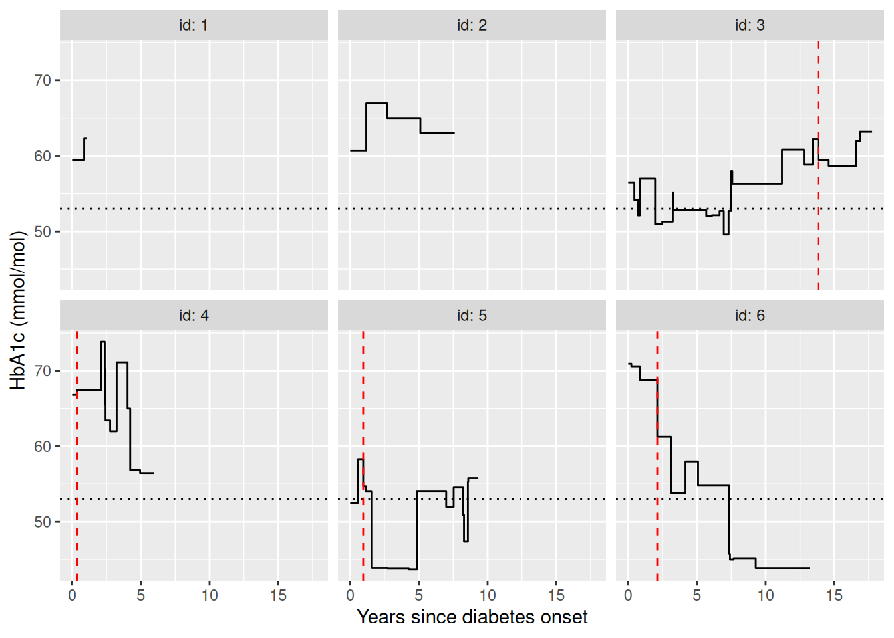

This vignette builds a larger simulation of a clinical cohort of people with type 1 or type 2 diabetes who attend regular screening visits. At each visit, five clinical values are measured and compared with treatment targets:
| Measurement | Target |
|---|---|
| HbA1c | < 53 mmol/mol |
| Systolic blood pressure | < 130 mmHg |
| LDL cholesterol | < 2.6 mmol/L |
| Urine albumin-creatinine ratio (UACR) | < 30 mg/g |
| eGFR | ≥ 60 ml/min/1.73m² |
A value off target may lead to treatment being started, which in turn affects later measurements. Follow-up starts at diabetes onset and ends at cardiovascular disease (CVD), kidney failure, or death, or is censored by emigration or the end of the study. People are diagnosed on different calendar dates, so each is followed for a different length of time.
Visits cost clinical resources, so a natural question is how much visit frequency matters: can people be seen less often, or more often only when they need it, without increasing their risk of complications?
The Model
Time is measured in years since diabetes onset. The baseline covariates are diabetes type, age at onset, sex, and the calendar year of diagnosis.
Visits happen about once a year. At each visit HbA1c, blood pressure, LDL, UACR and eGFR are measured, and treatments may be started. The diagram shows how visit k depends on visit k - 1: each measurement depends on its previous value and on treatment, albuminuria also on the previous HbA1c and blood pressure, and kidney function on the previous HbA1c and albuminuria. The outcomes until the next visit depend on the latest measurements. The baseline covariates, which affect the measurements at onset and the outcomes, are left out.
flowchart LR X1["HbA1c, SBP, LDL<sub>k−1</sub>"] U1["log-UACR<sub>k−1</sub>"] E1["eGFR<sub>k−1</sub>"] A1["Treatment<sub>k−1</sub>"] X2["HbA1c, SBP, LDL<sub>k</sub>"] U2["log-UACR<sub>k</sub>"] E2["eGFR<sub>k</sub>"] A2["Treatment<sub>k</sub>"] Y["CVD, kidney failure, death<br/>before visit k + 1"] A1 --> A2 A1 --> X2 A1 --> U2 X1 --> X2 X1 --> U2 X1 --> E2 U1 --> U2 U1 --> E2 E1 --> E2 X2 --> A2 U2 --> A2 X2 --> Y U2 --> Y E2 --> Y classDef node fill:#f5f7fa,stroke:#555,color:#111 class X1,U1,E1,A1,X2,U2,E2,A2,Y node
The measurements at visit k both drive the outcomes and the treatment, which lowers later measurements: they are time-varying confounders of the effect of treatment on the outcomes.
Specifying the Model in simevent
We build the model in three steps: the outcomes given the baseline covariates, then the measurements, and finally treatment, each added with update().
Outcomes
The baseline covariates are diabetes type, age at onset and sex, plus the calendar year of diagnosis, entry_year, used later for staggered entry. CVD, kidney failure and death are competing "terminal" processes, with hazards increasing with diabetes duration, and CVD declines with calendar time. Emigration is a rare "censoring" process:
model <- sim_model(
t1d = sim_covariate(function(N) rbinom(N, 1, 0.2)),
age = sim_covariate(function(N, t1d) {
ifelse(t1d == 1, runif(N, 18, 40), rnorm(N, 58, 10))
}),
male = sim_covariate(function(N) rbinom(N, 1, 0.6)),
entry_year = sim_covariate(function(N) runif(N, 2001, 2024)),
cvd = sim_process("terminal", eta = 0.004, nu = 1.4),
kidney = sim_process("terminal", eta = 0.0006, nu = 1.4),
death = sim_process("terminal", eta = 0.003, nu = 1.4),
emigration = sim_process("censoring", eta = 0.003, nu = 1),
effects = list(
sim_effect(
cvd ~ (age - 60) + male + (entry_year - 2010),
coef = c(0.06, 0.4, -0.03)
),
sim_effect(death ~ (age - 60) + male + t1d, coef = c(0.08, 0.3, 0.5))
)
)Measurements
Visits are a "transient" process, about once a year. Each clinical value is a sim_mark(), drawn at onset and re-measured at every visit. UACR is strongly right-skewed, so we model it on the log scale.
Each measurement depends on the previous one, pulled towards its untreated population level (60, 138, 3 and log(12) in draw), and HbA1c and blood pressure drift upwards with diabetes duration t. Log-UACR also depends on HbA1c and blood pressure at the previous visit, and eGFR declines by 1 ml/min/1.73m² per year since the previous visit, faster with albuminuria and high HbA1c at the previous visit.
In the effects into a mark, t is the time of the visit being drawn, and event_time(visit, -1) the time of the previous visit (0 at the first visit). A mark redrawn at visits can’t be used as is there, since it would be unclear whether the value before or after the visit is meant, so we write hba1c(event_time(visit, -1)) for the HbA1c measured at the previous visit (the value at onset, at the first visit).
The outcome hazards depend on the most recent measurements, centred at the targets. These effects are added to the ones already in the model:
model <- update(
model,
visit = sim_process("transient", eta = 1, nu = 1),
hba1c = sim_mark(
init = function(N, t1d) rnorm(N, ifelse(t1d == 1, 75, 62), 12),
update = "visit",
draw = function(N, lp) rnorm(N, 60 + lp, 5)
),
sbp = sim_mark(
init = function(N, age) rnorm(N, 115 + 0.35 * age, 14),
update = "visit",
draw = function(N, lp) rnorm(N, 138 + lp, 7)
),
ldl = sim_mark(
init = function(N) rnorm(N, 3, 0.8),
update = "visit",
draw = function(N, lp) pmax(rnorm(N, 3 + lp, 0.3), 0.5)
),
log_uacr = sim_mark(
init = function(N) rnorm(N, log(12), 1),
update = "visit",
draw = function(N, lp) rnorm(N, log(12) + lp, 0.4)
),
egfr = sim_mark(
init = function(N, age) pmin(rnorm(N, 130 - 0.7 * age, 12), 125),
update = "visit",
draw = function(N, lp) pmax(rnorm(N, lp, 3), 5)
),
effects = list(
sim_effect(
hba1c ~ (hba1c(event_time(visit, -1)) - 60) + t,
coef = c(0.75, 0.1)
),
sim_effect(
sbp ~ (sbp(event_time(visit, -1)) - 138) + t,
coef = c(0.7, 0.1)
),
sim_effect(ldl ~ ldl(event_time(visit, -1)) - 3, coef = 0.7),
sim_effect(
log_uacr ~ (log_uacr(event_time(visit, -1)) - log(12)) +
(hba1c(event_time(visit, -1)) - 53) +
(sbp(event_time(visit, -1)) - 130),
coef = c(0.8, 0.006, 0.006)
),
sim_effect(
egfr ~ egfr(event_time(visit, -1)) +
(t - event_time(visit, -1)) +
pmax(log_uacr(event_time(visit, -1)) - log(30), 0) +
(hba1c(event_time(visit, -1)) - 53),
coef = c(1, -1, -2, -0.03)
),
sim_effect(
cvd ~ (hba1c - 53) + (sbp - 130) + (ldl - 2.6) + (log_uacr - log(30)),
coef = c(0.015, 0.015, 0.3, 0.15)
),
sim_effect(
kidney ~ (60 - egfr) * (egfr < 60) + (log_uacr - log(30)),
coef = c(0.08, 0.5)
),
sim_effect(
death ~ (egfr < 60) + (log_uacr - log(30)),
coef = c(0.4, 0.15)
)
)
)Treatment at Visits
Treatment decisions are made at visits too, so each treatment is also a sim_mark(): an indicator, 0 at onset, redrawn at each visit. The decision uses the measurements taken at the same visit, written hba1c(t), so those are drawn first. The draw is a logistic model with a low baseline probability of starting treatment.
Treatment is started with high probability at a visit where its measurement is off target: with the baseline -4 in start_treatment, an untreated person off target starts with probability plogis(-1), about 0.27, and one on target with probability plogis(-4), about 0.02. Once started it’s continued, with probability at least plogis(6), about 0.998.
Each treatment lowers its measurement at the following visits, through its status since the previous visit. Since part of the previous value carries over, the shift at each visit accumulates: with persistence 0.75, a shift of -2.5 per visit lowers HbA1c by 2.5 / (1 - 0.75) = 10 mmol/mol in the long run, from 60 to 50, below the target of 53:
start_treatment <- function(N, lp) rbinom(N, 1, plogis(-4 + lp))
model <- update(
model,
glucose_tx = sim_mark(function(N) rep(0, N), "visit", start_treatment),
bp_tx = sim_mark(function(N) rep(0, N), "visit", start_treatment),
statin = sim_mark(function(N) rep(0, N), "visit", start_treatment),
effects = list(
sim_effect(
glucose_tx ~ glucose_tx(event_time(visit, -1)) + (hba1c(t) >= 53),
coef = c(10, 3)
),
sim_effect(
bp_tx ~ bp_tx(event_time(visit, -1)) +
(sbp(t) >= 130) +
(log_uacr(t) >= log(30)),
coef = c(10, 3, 1)
),
sim_effect(
statin ~ statin(event_time(visit, -1)) + (ldl(t) >= 2.6),
coef = c(10, 3)
),
sim_effect(hba1c ~ glucose_tx(event_time(visit, -1)), coef = -2.5),
sim_effect(sbp ~ bp_tx(event_time(visit, -1)), coef = -3),
sim_effect(ldl ~ statin(event_time(visit, -1)), coef = -0.3),
sim_effect(log_uacr ~ bp_tx(event_time(visit, -1)), coef = -0.1)
)
)Simulating the Cohort
People are diagnosed between 2001 and 2024 and followed until the end of 2024, so each person’s administrative censoring time is 2025 - entry_year. max_cens takes this as a function of baseline covariates:
cohort <- simulate_events(
model,
n = 5000,
max_cens = function(entry_year) 2025 - entry_year,
seed = 1
)How follow-up ends, with "max_cens" the end of the study:
cohort[, .SD[.N], by = id][, table(droplevels(event))]
#>
#> cvd kidney death emigration max_cens
#> 619 77 389 156 3759The HbA1c measurements of a few patients, with the target as a dotted line and the start of glucose-lowering treatment as a dashed line:
ids <- 1:6
onset <- cohort[id %in% ids, .(time = 0, hba1c = hba1c_0[1]), by = id]
trajectories <- rbind(onset, cohort[id %in% ids, .(id, time, hba1c)])
treated <- cohort[id %in% ids & glucose_tx == 1, .SD[1], by = id]
ggplot(trajectories, aes(time, hba1c)) +
geom_step() +
geom_hline(yintercept = 53, linetype = "dotted") +
geom_vline(
aes(xintercept = time),
data = treated,
linetype = "dashed",
colour = "red"
) +
facet_wrap(~id, labeller = label_both) +
labs(x = "Years since diabetes onset", y = "HbA1c (mmol/mol)")
Most people are above target at onset, so about half start each treatment at the first visit, and almost everyone still followed is treated within ten years:
cohort[
event == "visit",
lapply(.SD, mean),
by = .(years = 5 * floor(time / 5)),
.SDcols = c("glucose_tx", "bp_tx", "statin")
]
#> years glucose_tx bp_tx statin
#> <num> <num> <num> <num>
#> 1: 0 0.5188232 0.5036216 0.4900742
#> 2: 5 0.8441283 0.8265516 0.8087819
#> 3: 10 0.9529488 0.9442475 0.9166398
#> 4: 15 0.9843540 0.9839070 0.9684846
#> 5: 20 0.9942661 0.9839450 0.9873853How Often Should People Be Seen?
In this model, visits matter because treatment can only be started at a visit: fewer visits mean values stay off target for longer before treatment, raising the risk of complications. We compare visit schedules by their 15-year risk of each outcome and the number of visits needed. For a risk unaffected by censoring, emigration is turned off (cens = 0) and everyone is followed for 15 years (max_cens = 15).
compare <- function(model, intervene = list()) {
data <- simulate_events(
model,
n = 10000,
intervene = intervene,
cens = 0,
max_cens = 15,
seed = 2
)
risk <- event_risk(data, model, c("cvd", "kidney", "death"), tau = 15)
cbind(
visits = sum(data$event == "visit") / 10000,
dcast(risk, . ~ process, value.var = "risk")[, -1]
)
}Fixed schedules are interventions on the visit process: visit = 0.5 halves its hazard, giving a visit about every second year, and visit = 2 doubles it:
An individualised schedule instead depends on the latest measurements: someone with everything on target is seen every second year, and someone with any value off target every six months. This is a change to the model itself rather than an intervention, made with update():
individualised <- update(
model,
visit = sim_process("transient", eta = 0.5, nu = 1),
effects = list(
sim_effect(
visit ~ (hba1c >= 53 | sbp >= 130 | ldl >= 2.6 | log_uacr >= log(30)),
coef = log(4)
)
)
)
schedules[["individualised"]] <- compare(individualised)
rbindlist(schedules, idcol = "schedule")
#> schedule visits cvd death kidney
#> <char> <num> <num> <num> <num>
#> 1: every 2 years 6.4918 0.1671 0.1064 0.0173
#> 2: yearly 13.0209 0.1413 0.1111 0.0188
#> 3: every 6 months 26.5548 0.1266 0.1079 0.0174
#> 4: individualised 21.0111 0.1182 0.1087 0.0171Visiting more often lowers the CVD risk, at the cost of more visits. The individualised schedule has the lowest CVD risk with fewer visits than seeing everyone every six months, since the visits are spent on those whose values are off target. Death and kidney failure change less, since in this model they are driven mostly by age and kidney function, which treatment affects only through albuminuria.
The same approach extends to other questions, e.g. targets other than the standard ones, by changing the thresholds in the treatment effects, or schedules based on predicted risk rather than single values off target.